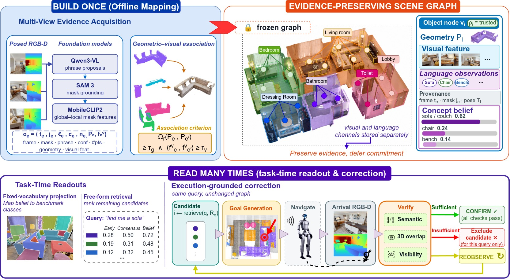
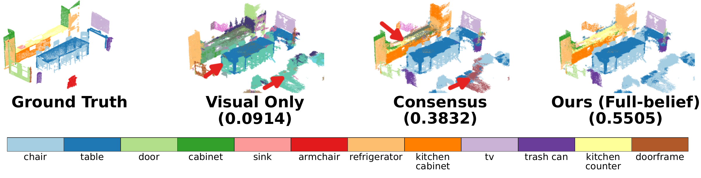
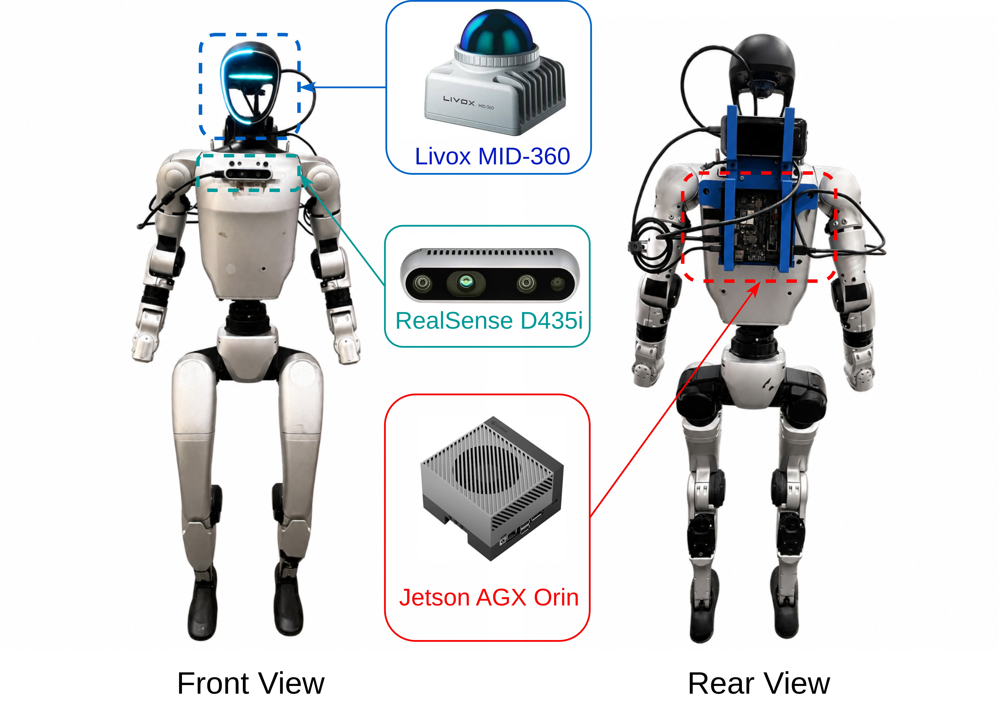
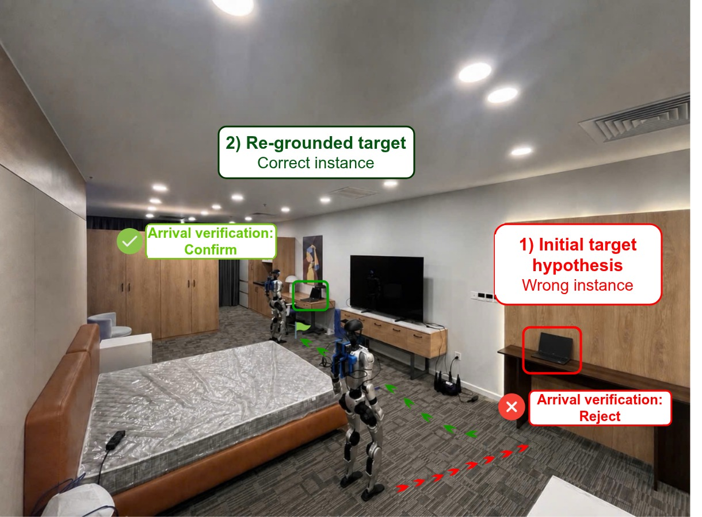

OpenBelief-Nav is an evidence-preserving object memory for open-vocabulary language-guided navigation. Each object node preserves its multi-view phrases, reliability weights, and exact provenance instead of a single committed label — so segmentation, retrieval, and execution-time correction all become task-time readouts over one frozen graph.
*Equal contribution
A sofa seen from four viewpoints may be proposed as sofa, chair, bench, or armchair — occlusion, scale, and foundation-model noise guarantee disagreement. ConceptGraphs, HOV-SG, FSR-VLN, and DualMap all resolve that disagreement at construction time, exposing each object as one fused feature, label, or consensus state. Related approaches push on adjacent axes without changing this pattern: ConceptFusion and VLMaps embed features densely rather than per object, and OGScene3D and ThinkGraphs refine tracking and confidence while still exposing a single committed state per object. Three things go wrong.
When a majority vote picks one label, the minority phrases are gone. Yet among nodes misclassified by majority vote, the correct category is often still present in the stored phrase set — information the system already paid to acquire, discarded by how it is stored.
The readout that maximizes benchmark segmentation is not the one that maximizes navigation success — our experiments show full-belief projection wins segmentation while a consensus readout wins retrieval. A map that commits to either loses the other.
The top-ranked node can be a distractor, or an instance the arrival observation can't confirm. Retrieval alone can't tell the difference — the robot has to verify the selected binding physically before treating it as ground truth.
An object node stores the evidence-preserving state \(\mathcal{B}_i = (P_i, \mathbf{f}_i^v, \mathcal{O}_i, \mathbf{V}_i, \mathbf{p}_i, \mathbf{f}_i^t, \rho_i)\) — point cloud, aggregate visual feature, the raw language observations, concept-level evidence with its smoothed belief, a consensus text feature, and a trust status. The visual and language channels are never destructively fused during mapping; every cross-modal decision is deferred to a readout.
A frozen VLM proposes phrases; a promptable segmenter grounds each phrase as masks. Every mask is kept as an observation with its phrase, confidence, 3D point cloud, visual feature, and exact frame + mask provenance.
Observations merge on 3D overlap, with visual similarity only as a rejection cue — never on predicted names. Precision is favored: a false merge is irreversible, a missed one is recoverable at query time.
Observations are weighted by what we actually know — segmentation confidence and 3D support — grouped into synonym-aware concepts \(V_{ik}\), and Dirichlet-smoothed so sparse evidence can't fake certainty.
Vocabulary projection and free-form retrieval are separate operators over the same frozen evidence — and at deployment, arrival observations physically test the selected hypothesis.

Five views of the same sofa arrive with different phrases. Play the stream, then toggle synonym consolidation off: the lexical variants sofa / couch / loveseat split their votes and a single high-support chair observation wins. Drag α to see Dirichlet smoothing keep sparse evidence from collapsing into false certainty.
Qwen3-VL-4B-Instruct proposes object phrases, SAM 3 grounds them into masks, and MobileCLIP2-S4 encodes visual and textual features. Mapping runs offline on an NVIDIA RTX 5090 (32 GB); task-time readouts run online. Language evidence is retained per observation, while geometry and visual features are aggregated independently.
The same frozen object memory supports fixed-vocabulary projection and free-form retrieval through task-specific readouts.
The benchmark vocabulary arrives only at evaluation time. The stored belief \(p_{ik}\) is visually refined into \(\widetilde{p}_{ik}\) within its existing support, then projected onto target class distribution \(\widehat{p}_i(c)\) — secondary hypotheses an early top-1 would have discarded remain recoverable.
Query similarity fuses the visual and language heads \(H_i^{(r)}(q)\) — but the fusion weight \(\lambda_i\) is per-node, conditioned on the trust status \(\rho_i\) produced during belief construction:
| no language evidence (\(K_i=0\)) | trust vision only | \(\lambda_i = 1.0\) |
| degraded belief (\(\rho_i = \text{degraded}\)) | lean visual | \(\lambda_i = 0.7\) |
| trusted belief (\(\rho_i = \text{trusted}\)) | trust the text head | \(\lambda_i = 0.2\) |
A retrieval result is a hypothesis, not a fact. On arrival, the robot's RGB-D observation runs an ordered verifier — re-observe if the candidate isn't sufficiently visible (absence of view is not evidence of absence), reject on semantic mismatch or on a semantic match that fails to coincide geometrically with the stored node, confirm otherwise. Rejection changes exactly one thing: a per-query exclusion set \(\mathcal{R}_q^{(k+1)} = \mathcal{R}_q^{(k)} \cup \{i^{(k)}\}\). The graph is never modified and the query is never rewritten.
OpenBelief-Nav variants share identical observations and object geometry and differ only in their task-time semantic readout. Reference systems are evaluated under the same benchmark protocols.
ScanNet200 (5 scenes) and Replica (8 scenes). Higher is better; bold = best per dataset.
| Method | mIoU ↑ | F-mIoU ↑ | mAcc ↑ |
|---|---|---|---|
| ScanNet200 | |||
| ConceptGraphs | 0.3077 | 0.3538 | |
| HOV-SG | 0.3381 | 0.3714 | |
| DualMap | 0.3288 | 0.3794 | |
| OpenBelief-Nav early-commit | 0.2393 | 0.4847 | 0.4653 |
| OpenBelief-Nav consensus | 0.4887 | 0.4580 | |
| OpenBelief-Nav full-belief | 0.5276 | 0.4685 | |
| Replica | |||
| ConceptGraphs | 0.3858 | 0.3559 | |
| HOV-SG | 0.4846 | 0.3835 | |
| DualMap | 0.5207 | 0.4024 | |
| OpenBelief-Nav early-commit | 0.2701 | 0.4653 | 0.4694 |
| OpenBelief-Nav consensus | 0.4647 | 0.4774 | |
| OpenBelief-Nav full-belief | 0.5204 | 0.4822 | |
SR@1m (%), 78 trials per method following the DualMap protocol. Internal readouts share one graph.
| Method | 00829 | 00848 | 00880 | Avg. SR@1m ↑ |
|---|---|---|---|---|
| ConceptGraphs | 69.2 | 53.8 | 61.5 | |
| HOV-SG | 53.8 | 46.2 | 57.7 | |
| DualMap | 73.1 | 69.2 | 69.2 | |
| OpenBelief-Nav consensus | 80.8 | 76.9 | 73.1 | |
| OpenBelief-Nav early-commit | 84.6 | 73.1 | 73.1 | |
| OpenBelief-Nav belief-weighted | 76.9 | 73.1 | 73.1 |
Same object geometry and observations, scored by four different readouts. Higher is better; bold = best per dataset.
| Semantic readout | mIoU ↑ |
|---|---|
| ScanNet200 | |
| Visual-only | 0.1286 |
| Consensus-only | 0.2107 |
| Early-commit | 0.2393 |
| Full-belief projection | 0.2742 |
| Replica | |
| Visual-only | 0.2287 |
| Consensus-only | 0.2831 |
| Early-commit | 0.2701 |
| Full-belief projection | 0.2912 |

Consensus readout with fixed observations and geometry; 78 navigation trials, including 18 inserted YCB-object trials.
| Variant | ScanNet200 mIoU | Nav SR@1m | YCB SR@1m |
|---|---|---|---|
| \(w_e = 1\) (no reliability) | 0.2010 | 70.5 | 55.6 |
| \(w_e = c_e \cdot n_e\) (linear support) | 0.2117 | 74.4 | 50.0 |
| no synonym consolidation | 0.2067 | 75.6 | 61.1 |
| no low-evidence regularization | 0.2095 | 70.5 | 50.0 |
| Default belief construction | 0.2107 | 76.9 | 61.1 |
“Evidence @ query” = per-observation evidence exposed to task-time readouts.
| System | Evidence @ query | Exec. correction |
|---|---|---|
| ConceptGraphs | — | — |
| HOV-SG | — | — |
| FSR-VLN | — | — |
| DualMap | — | ✓ |
| OpenBelief-Nav | ✓ | ✓ |
Compute-heavy semantic reasoning runs offboard; an onboard Jetson keeps the motion loop local. The bridge is Zenoh. The robot navigates to a candidate, looks, and lets physics vote.
Intel RealSense D435i RGB-D camera and Livox MID-360 LiDAR for perception and arrival verification.
Semantic mapping, open-vocabulary retrieval, and language-conditioned reasoning.
ROS 2 Nav2 + CMU navigation stack, interfacing the low-level controller.
Decoupled comms: heavy reasoning offboard, motion planning and control onboard.
The verifier must confirm without a false rejection — correction should cost nothing when the map is right.
A look-alike outranks the true target. Arrival evidence rejects it; the query re-grounds to the supported alternative.
20 Unitree G1 runs, 10 matched cases (same graph, query, and start pose for both execution modes).
| Condition | Runs per method | Top-1-only SR | Full-correction SR | Full-correction mean visits |
|---|---|---|---|---|
| Correct | 5 | 5/5 (100%) | 5/5 (100%) | 1.00 |
| Confusable | 5 | 1/5 (20%) | 3/5 (60%) | 1.80 |
| Overall | 10 | 6/10 (60%) | 8/10 (80%) | 1.40 |


The real-world pilot contains 20 robot runs across 10 matched cases and permits at most two verified candidate attempts. It evaluates recovery when the intended target remains mapped. It does not evaluate absent-query rejection, removed-target detection, general map repair, or broad real-world generalization. Belief scores represent relative support, not calibrated uncertainty. Arrival verification assumes the navigation stack reaches the observation viewpoint.
@misc{2026openbeliefnav,
title = {OpenBelief-Nav: Evidence-Preserving Object Memory for
Open-Vocabulary Language-Guided Navigation},
author = {Nguyen, Dinh Tuan and Dao, Anh and Dang, Phuong Nam and
Pham, Quan-Dung and Le, Tuyen P. and Nguyen, Truong and Nguyen, Quan},
year = {2026},
url = {https://openbelief-nav.github.io/}
}